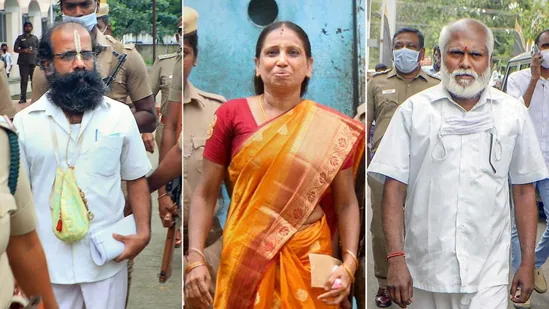

The Centre said it didn't get the chance to argue the case and that the apex court order is “legally flawed”.
The Centre on Thursday moved the Supreme Court seeking a review of its November 11 order granting remission to six convicts in the former prime minister Rajiv Gandhi assassination case. The Centre said it didn't get the chance to argue the case and that the apex court order is “legally flawed”
On November 11, the Supreme Court had set free Nalini Sriharan and five other remaining convicts, who were serving life term for about three decades in the Rajiv Gandhi assassination case, noting that its earlier order releasing another convict AG Perarivalan was equally applicable to them.
On the next day, Nalini and the other convicts walked out of the Tamil Nadu prisons. Nalini, wife of V Sriharan alias Murugan, who was the first to be released, claimed her firm belief that she is innocent had kept her alive all these years.